胸の観音/福岡県
福岡県京都郡みやこ町。
観音山中腹に胸の観音と呼ばれる所がある。
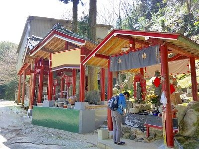
お寺、というよりはどちらかというと自然発生的に出来た民間信仰の霊場のような雰囲気が濃厚だ。
田舎の辺鄙な場所の割りには参拝者は少なくはなかった。かなりガチ拝みの方の姿もチラホラ。
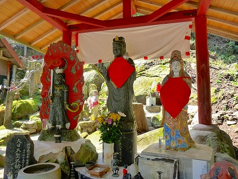
入り口付近にある赤いあずま屋には不動明王や観音サマなどが祀られている。
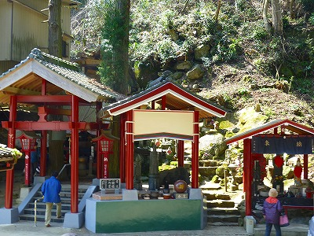
↑左の2本の杉の木は願かけ二本巣後地蔵尊といい、2本の杉を∞型にグルグル回れば願いが叶うのだとか。
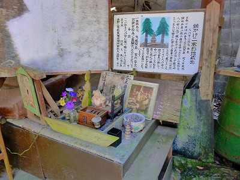
トタンで覆われたお堂には様々な種類の仏像が並んでいて濃密な空気が漂っている。
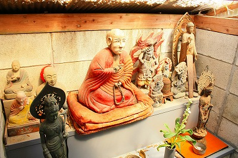
チョットお土産屋っぽいですね。あと射的っぽいですね。
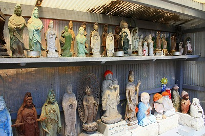
よく国東半島で見られるような珍妙なプロポーズの仁王像がいた。
ここは福岡県だが大分県の北部にも近く、六郷満山仏教の文化圏なのだという。
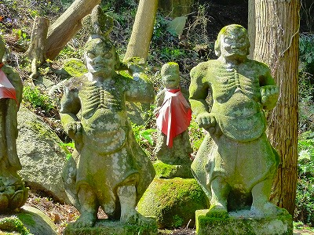
閻魔様もチョット大分風味な感じ。
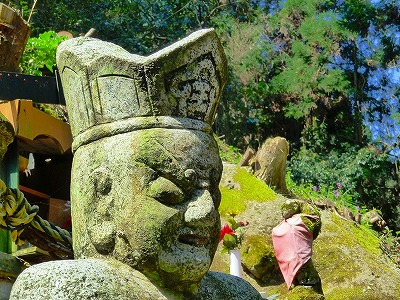
なぜか草むらに厨子が棄てられていた。どうした。
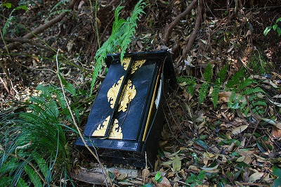
石仏の頭が取れたのをコンクリで補修した仏像。あちこちで見かけるが、これが何とも好きなんだなー。
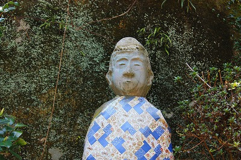
神棚も一緒に合祀。
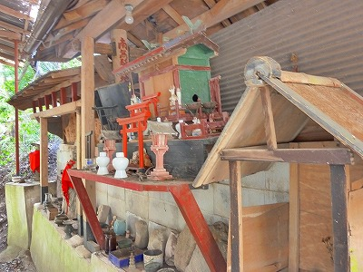
で、いよいよ胸の観音本丸に迫る。
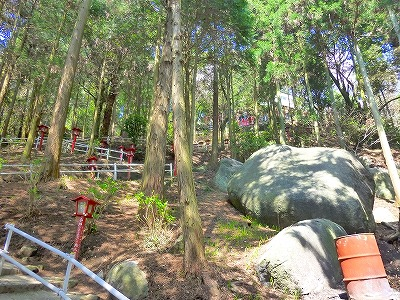
先ほどのエリアからさらに山の上に向かう。このようなジグザクの道を登っていくのだ。
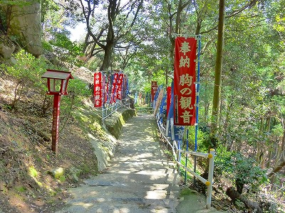
斜度は緩いが意外と疲れるぞ。
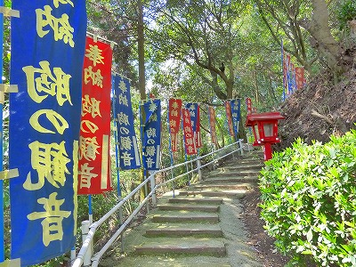
もう少しで到着、というところにバイク。ええー！ここまでバイクで来られるの？
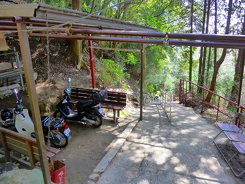
てな訳で到着。
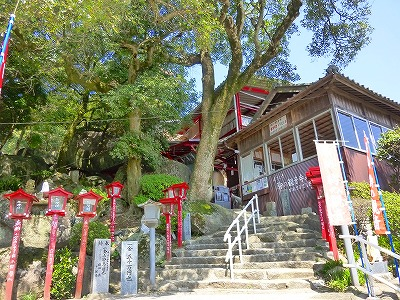
階段を登りきると赤い鉄骨で組まれた大屋根が広がっている。
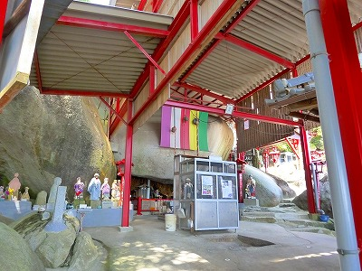
その先には…
何とも見事な巨石が鎮座していた。
ここの霊場のいわゆる本尊である。
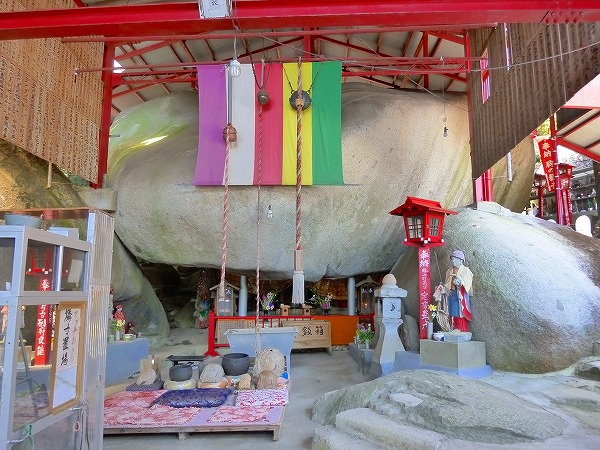
つまり巨石信仰の霊場なのだが、事情はやや複雑だ。
ここ、胸の観音に伝わる縁起話。
今から千年ほど昔の話。
この地にて旱魃があり、長者が雨乞いを池の龍神に頼んだ。その際、自分の娘を差し出す約束をしたのだ。
見る見るうちに竜巻が起こり豪雨となり村人は助かったが、長者は末娘を差し出さねばならない。
覚悟を決めた末娘は龍神のすむ池のほとりに座る。
今にも龍が娘を飲み込もうとしたそのとき、娘はおもむろに観音経を読み、一巻を読み終わるごとに針で経を閉じて池に投げ込んだ。
そうして八巻を投げ込んだ頃、針ごと経巻を飲み込んでいた龍は針が刺さってイタイイタイ。終には死んでしまったそうな。
これもひとえに観音経の法力パワーのおかげです。めでたしめでたし、的な話。
ところがこの話、それだけでは終わらない。
龍を退治した娘が里に戻ろうとすると、にわかに胸の痛みを覚え、ついに亡くなってしまう。
観音に救われた自分が今度はみなの痛みを救いましょう、といって死んでしまったのが、現在のこの胸の観音なのだ。
何なんだろう、この話。
いい話なのか悪い話なのか良く判らないけど後味の悪さだけは際立ってる噺だな。
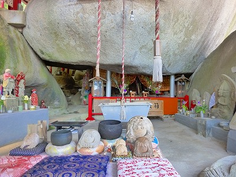
長者の末娘はこの巨石の下に祀られているとか。
普通だったら死んだ龍が岩に変わったとか死んだ娘が岩に変わったというオチがつきそうなものだが、そのような巨石絡みの話が出てこない、ということはこの龍神事件の起こった千年前にはすでに巨石の存在は人々に知られており、娘の霊を巨石の下に安置したというのだから、信仰上特別な存在として認識されていたと考えられる。
つまりこの巨石は龍神伝説が生まれる前から元々崇拝の対象として信仰されていたのだ。
そこに現世利益である観音信仰が後乗りした結果、今の姿になったと考えられる。
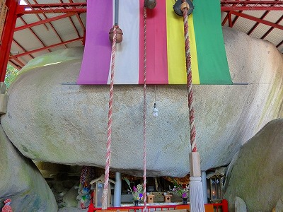
つまりいくつもの信仰を重ね着した重層的な信仰施設、なのだ。
そういう意味で単なる巨石信仰とも山岳信仰とも異なった雰囲気が満ちている。
巨石の下には祭壇が設けられている。手前には座布団、鉦、木魚が並べられ、ここに参拝する人が多いことを物語っている。
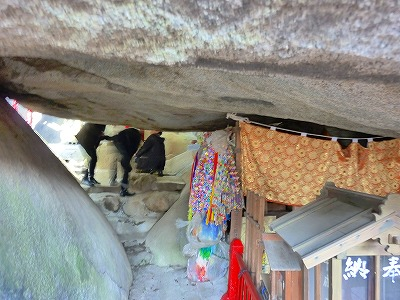
巨石の左下には隙間があってプチ胎内潜りができる。
↓岩の下を潜って反対側に出たところ。
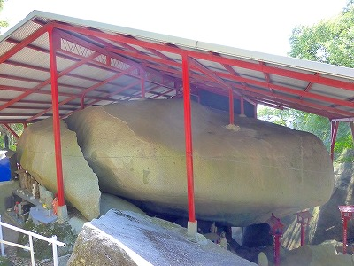
岩がばっくし割れちゃっているのがお判りいただけるだろうか。
あ、岩から直接柱建てちゃってるんだ。
岩の下にも小さな仏像が並んでいた。
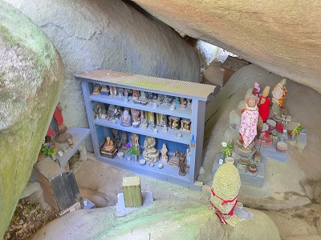
これだけ大きな石にわざわざ屋根を架けるほど大切な崇拝対象なのだ。
信仰の篤いことよ。
裏山には稲荷社があり、そこからは下界がよく見渡せた。
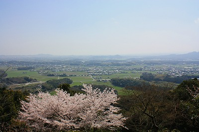
おまけ
ここの駐車場近くで見かけた素敵なインディーズ祠。
一般の人が奉納したのだろう。異様にカラフルである。
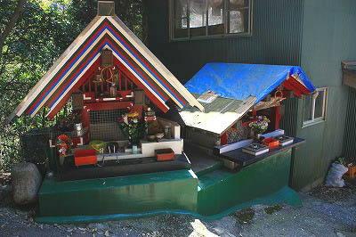
ふたつとも同じ作者なのだろうか。小口の処理などが似ている。
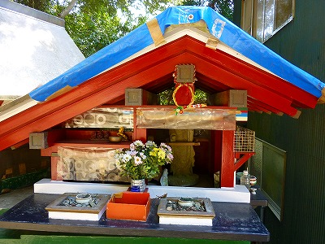
それにしてもこの鬱陶しいほどの屋根、どう？
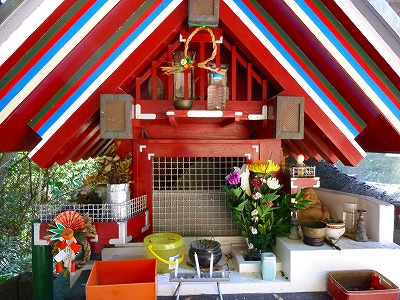
ひな祭りのひし餅みたいな軒先だ。しかも何層にも重なってるし。
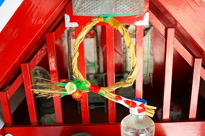
屋根裏部屋には小さな木の弘法大師が納まっていた。
2010.04.
珍寺大道場 HOME